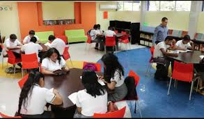

Las habilidades socioemocionales son herramientas que permiten a las personas entender y regular sus emociones, sentir y mostrar empatía por los demás, establecer y desarrollar relaciones positivas, tomar decisiones responsables, y definir y alcanzar metas personales.
Existe evidencia de que la educación socioemocional contribuye a mejorar el desempeño académico y profesional, así como previene situaciones de riesgo en las y los jóvenes.

Construye T promueve el desarrollo de habilidades socioemocionales (HSE) en las y los jóvenes de educación media superior pública, a través de actividades didácticas, deportivas y culturales para mejorar su bienestar presente y futuro.
Un proyecto tecnologico es una secuencia de tareas o actividades relacionadas entres si, que tiene como objetivo la creacion de un producto o servicio que brinde una solucion, para lo que se diseña sea efectivo. debe resolver el problema mejor que otra propuesta con la misma funcion. El resultado final es un modelo o prototipo a escala. Se debe tener presente que, cuando hablamos de tecnologias, no nos referimos a las nuevas si no a las mas apropiadas.Actualmente, se han sumado cinco componentes que, de manera transversal e incorporando la perspectiva de género, aportan al desarrollo de las HSE que promueve Construye T, los cuales son: Práctica y colaboración ciudadana; Educación integral en sexualidad y género; Actividades físicas y deportivas, Arte, y Educación para la salud. Construyete es un programa que se desarrolla en alianza entre la Secretaría de Educación Pública, a través de la Subsecretaría de Educación Media Superior (SEMS) y el Programa de las Naciones Unidas para el Desarrollo en México (PNUD).